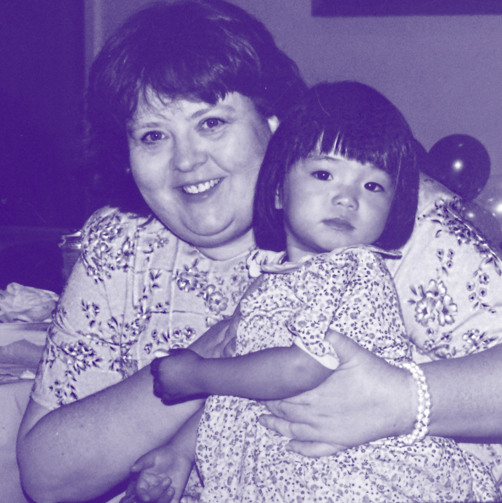

One of two reasons
It's either (a) I've summoned you to help me surprise Mum with the best birthday quarntine has yet to experience or (b) you've somehow stumbled upon this webpage unto your own accord of internet trolling. It doesn't matter how you've gotten here, but now that you are....
Wish Karen a Happy Birthday!
Mum has always been my biggest supporter, and lately I've been scratching at ways in which I can show her my unconditional apprciation. Last year, I made a short video summarizing the highlights of her life, but this year I want to do something even more radical. It just so happens that my next blog post is due the day after her 63rd birthday. What better opportunity than to create this website showcasing the skills I've acquired eight-weeks into my summer program? *I'll answer that, there is none*
- Click to access the birthday wish form
- Write your birthday memo
- Optional, but highly encouraged. Add a voice recording to the memo
- When you think the birthday wish is complete, double check the form. Once submited, a birthday wish cannot be edited or deleted
- Click on the "submit" button, and you're finished
- You should see your birthday greeting appear at the top of the list
Instructions
About the Creator

Yuh that's me, Maura, about 20 years ago, but not much about my appearance has changed. I'm still cordinating stylish outfits with Mum, and rocking my classic expressionless face. Many of you know me well, but for those who may not, I'm Karen's daughter.
Conicidentally, this year Mum's birthday falls right as I'm in the process of finishing my summer course with Yale x Flatiron, where I'm learning full-stack web development in Ruby, JavaScript, and HTML/CSS. For the course, each student blogs about their experience as a beginner programmer and various coding queries. Check out my blog on Medium.
For more information or to contact me, click here.